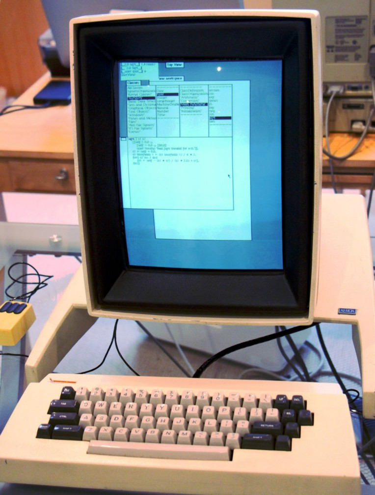
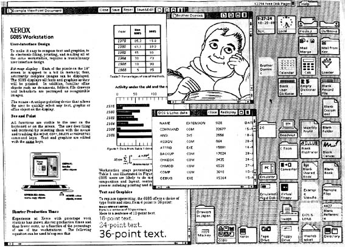
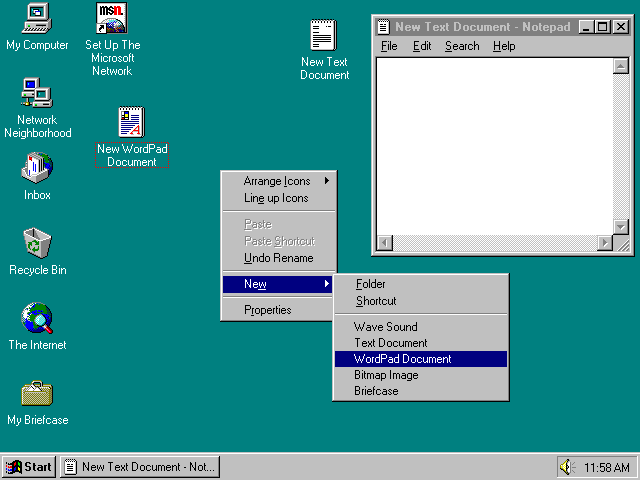
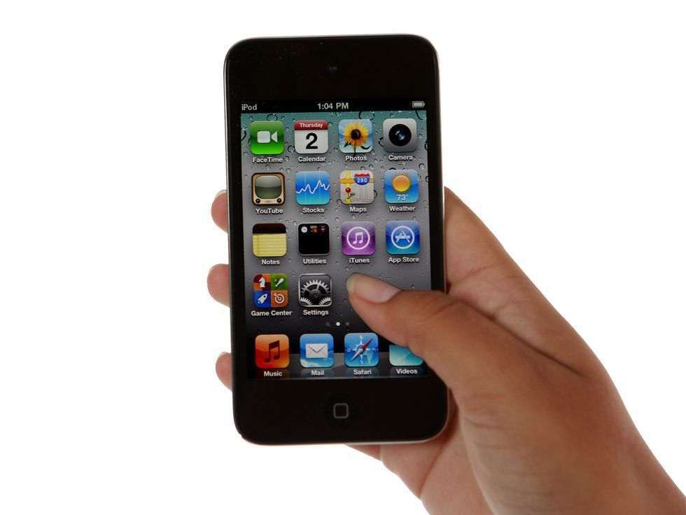
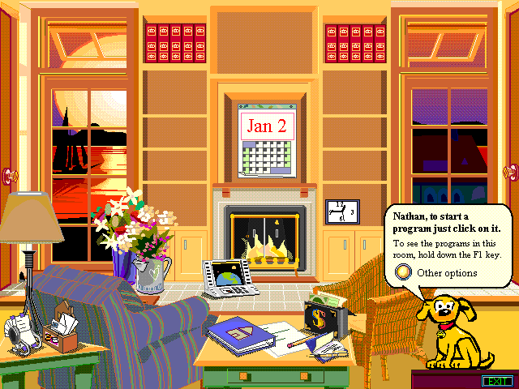

Week 1 - History and Intro to Interfaces
Date: 2025-01-22
Overview
- Introduction
- Get to know each other
- Our goals for the course
- What do we already know?
- Our tools
- Rapid history in modern desktop interfaces
- workshop: using classic computer interfaces
- Amateur interfaces: Hypercard
Introduce ourselves
Get to know each other
Our goals for the course
What do we already know?
What is an interface?
What is a user interface?
Well?! What is it?
The space where interactions between humans and machines occur. The goal of this interaction is to allow effective operation and control of the machine from the human end, whilst the machine simultaneously feeds back information that aids the operators' decision-making process. Examples of this broad concept of user interfaces include the interactive aspects of computer operating systems, hand tools, heavy machinery operator controls, and process controls. The design considerations applicable when creating user interfaces are related to or involve such disciplines as ergonomics and psychology. Generally, the goal of user interface design is to produce a user interface which makes it easy, efficient, and enjoyable (user-friendly) to operate a machine in the way which produces the desired result. This generally means that the operator needs to provide minimal input to achieve the desired output, and also that the machine minimizes undesired outputs to the human. --Wikipedia, User Interface
History of computer interfaces
The earliest era of interfaces
census worker with punch card machine, 1940s, U.S. National Archives and Records Administration
The earliest era of computer / machine interfaces centered on the batch interface. Punch cards were the primary method to input data. Special key punch card were manually punched and batch-processed when fed into a machine. The result could be a printout or mechanical operation. Errors were common, and could be hard to understand, and in addition to syntax errors (erros from typing the code incorrectly) there could also be mechanical errors. Running these batches of punchcards could take a very long time: hours or days until a result was produced.
Text User Interfaces
aka Command Line Interface
Teletype Model 33 ASR
Batch interfaces evolved over time into command line interfaces, which are input as text queries to a main system console. The system responds with output, usually text.
Early command line interfaces used a typewriter keyboard for input and teleprinters for output. Teleprinters evolved out of technology used for the telegraph since 1902, and later used in newsrooms to transmit information. In the 1970s video monitors became more common. Text output could be seen quicker. And simple pictures constructed out of text started to be seen.
Rogue, screenshot January 2020
The text user interface is still very relevant in the modern era, though mostly of use to expert users and fellow programmers. It can provide more comprehensive options, configurability and can be automated in ways that graphical interfaces cannot.
Pizza Party, Cory Arcangel and Michael Frumin, 2004
The history of the GUI
Doug Engelbart was a pioneering inventor and engineer working in human-computer interaction. At SRI International he led the Augmentation Research Center Lab and was responsible for developing the mouse, versions of hypertext, networking between computers, and early graphic user interfaces.
There is a clear mission embedded in the title Aumentation Research Center. Computers then, as now, were seen as devices to augment the capacity of humans. They were tools created and intended to extend our own innate abilities.
Doug Engelbart’s first computer mouse, 1964

Xerox Alto interface
Xerox Alto operating system

Notice how the screen of the Xerox Alto deskxtop was set
vertically. Why do you think that was?
Clue: what was their metaphor?
The GUI was developed at Xerox PARC by Engelbart, Alan Kay, and other researchers in 1981.
Alto icons

Xerox Star Desktop GUI
Apple unveiled the Lisa computer with a GUI on January 19, 1983.

Apple Lisa Finder, 1985
Apple Lisa icons, 1983
Apple Macintosh computers were a huge success. They demonstrated that a GUI could help sell computers to a more general audience of consumers than the experts they were previously attracting.
Mac system icons 1.0, 1984
These icons were all created by designer Susan Kare.
Graphical User Interfaces quickly became the standard of every computer operating system.
Windows 1.0
Sun Workstation, OpenLook desktop, 1989
Later GUI systems
In the 80s and 90s graphical user interfaces evolved.
NextSTEP operating system
Steve Jobs was kicked out of Apple, and went on to found NextSTEP, later rejoining Apple and leading it to success.
Apple System 7
Windows cribbed elements from the Macintosh operating system.

Windows 95
Windows 98
Windows NT
Icon History
Atari icons, 1985

Amiga icons, 1985

Windows 1.0 color icons, designed by Susan Kare
Turn of the century
Mac OS X, 2001
Windows XP, 2001
Note: the “Start” button was created by Microsoft in 1995 for Windows95.
Jumping ahead: smartphones
::: figure 
iOS
Sidenote: Microsoft Bob

Microsoft Bob, 1995
In 1995, Microsoft attempted a radical reimagining of the desktop metaphor (also known as WIMP - Windows, Icons, Mice, Pointer) pioneered by Xerox Parc and adapted by Apple, Windows and others. They created a virtual 3D room scene populated by cartoon creatures and objects as an overlaid interface to the operating system. It was widely criticized and was quickly dropped by Microsoft. Users found it clunky, ugly, confusing. Microsoft Word's Clippy was a continuation of Microsoft Bob, also disliked by users, and was also eventually removed from the software.
In-class workshop: classic Desktop GUIs
Windows 1.0 from 1985
Click in the window to activate mouse. It's recommended to try this fullscreen (button in top right of window). Hit escape to exit fullscreen.
Try doubleclicking on applications. You can get back to the application selection by doubleclicking on the floppy disk icon.
What happens when you have two applications open? Can you figure out how to quit? To close an application, go to the 3lines hamburger menu icon on the top left, click and drag down to close.
- Try out Paint.exe (doubleclick).
- Open the control panel Control.exe (doubleclick).
- Try opening Practice. It was created as a template for people to learn how to use a word processing application.
Apple Mac System 7 from 1991
Hit the play button and wait for the computer to boot up in your browser. You can click the fullscreen button. Then click in the window to gain use of the mouse. To leave later, press the escape button.
To test out:
- Click on the Apple menu and drag down and release on the various applications listed there. Try the calculator.
- Open the Control Panel and try the various system services there.
- Open sound, turn up the volume and try the alert sounds.
This is one of the most influential desktops and GUI systems ever. What do you find similar to your computer today? What do you find different? Are there things that confuse you?
Your assignment: Hypercard Stack reviews
We will be using 1990s Apple software Hypercard! You can access a web-based emulator here:
Hypercard Stacks on Internet Archive
Generally you double click on the disk and then doubleclick on the name of the Stack.
Note: These are non-professional programs made in the 90s, generally for personal use or small communities. They may contain inappropriate or strange content! Use at your own risk. You can also flag content on Archive.org.
These run slow! Your own mouse does not necessarily align exactly where the mouse is on the emulator. Try running these fullscreen.
Recommendations:
- Wedding Planner
- Student Stacks 7 (frog dissection)
- Chaos Control Music Magazine #4 - an experimental music digital zine from 1993!
- Movie Almanac
- Music Composition
- Contract Maker
- Dreamtime: A Hypertext fiction - Experimental hypermedia story
- Die Roller
- CMU Tunnels - an interactive tour of the steam tunnels of Carnegie Mellon “designed to illustrate the ability of the Macintosh to present unusual information in an unusual way", made by a student in 1988
- Seinfeld: An Unabridged Guide to Nothing
- IOWA Score Keeper
Music recommendations as background while trying these: The Cranberries, Nirvana, Nine Inch Nails, Weezer, or anything listed in the Chaos Control Music Magazine #4.
Instructions for making your own hyperlinked cards
- Wait for the computer to start up in your browser and then click in the window.
- Doubleclick on the Hypercard 2.4 folder.
- Doubleclick on the Hypercard app. Wait for it to open.…
- Try out the Hypercard tour (single click). Get a feel for the interface, especially its buttons.
- When you are ready to make your own, click and hold your mouse on File menu and choose New Stack. Programs made in Hypercard are called Stacks and consist of stacks of screens like a stack of index cards.
- Give it a name.
- Your stack has only one card. To make another, go to Edit and drag down to New Card. To go back, go to Go menu and drag to back.
- Go to the Objects menu, click and drag down to New Button.
- Doubleclick on your new button. Your stack currently has one
You cannot save your work!
Homework - Week 1
Reading Response
Due: next Wednesday
Read the excerpt from the Interface section of A New Program for Graphic Design.
- David Reinfurt, 2019
- read the full text
- an accessible version of the text has been provided as well.
- 20 - 25 minute read
Read Everest Pipkin's essay This is Not my Beautiful House: Examining the Desktop Metaphor, 1980-1995
- archived here
- Everest Pikin, 2019
- 20 - 25 minute read
Response: Write about half a page to a full page thoughtful response. What thoughts come up while reading these? What surprises you? What is new? What areas interest you?
“Desktop” Homework
For this homework you will submit some writing, a photograph, and a screenshot.
Response: Please write about half a page response to each of the readings.
David Reinfurt - A New Program for Graphic Design - Interfaces
In Reinfurt’s writing he describes the ‘interface’ of clocks, and their evolution from physical giant devices in town squares to the tiny digital ones on our wrist. He goes on to describe the evolution of the Apple operating system and its interface and the influence of Susan Kare’s icons.
It’s now over 35 years since the release of the first Macintosh. What assumptions (or not) or previous knowledge was Apple making that influenced the design of their first Macintosh operating system and its interface. Who dd they think of their audience and how did they build their interfaces to accomodate their needs? How might Apple think of its users now, and how would that alter what kinds of interfaces are built and with what assumptions?
Everest Pipkin - This is not my Beautiful House: Examining the Desktop Metaphor
In many ways, the failure of the house metaphor was a tragedy for the field.
What is the desktop metaphor? Why was it important or useful, and how did it fail? What metaphor has replaced it today? What new metaphors might we need for VR, AR or other new forms of interactivity and computing?
Our Desktops
Perhaps, looking at them now, it is the loneliness of early desktop interfaces that is their most alien aspect. Especially compared with the constant connection of the contemporary computing experience, early desktops feel distinctly apart. Each system was modeled after a clean desk, an undisturbed office, a focused workbench, an empty house.
Images
- Take a picture of your desk If you don’t have a desk, photograph the place where you do your work. e.g. your bed. What’s at your desk (tools, objects)?
- Take a screenshot of your computer desktop.
Sources:
- Images and historical information from A Brief History of User Interfaces